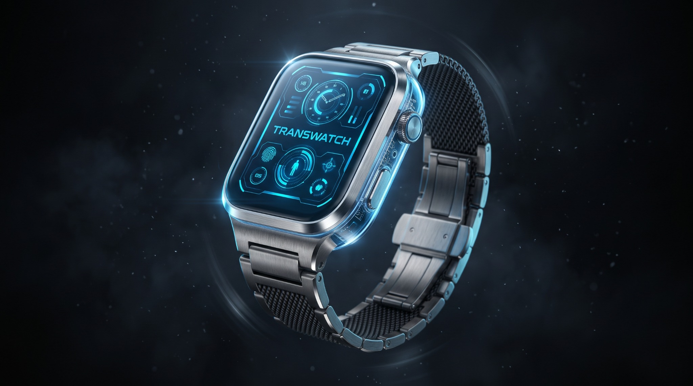

A bigger view
Transform the watch display into a larger screen experience, wherever you are.
THE NEXT STEP IN PERSONAL TECH
Meet TransWatch: a smart watch that transforms into a large screen, putting the power of a mini computer right in your hand.
Why settle for a tiny watch display? TransWatch is designed to take your digital life further. With its screen-projection concept, it can turn a compact wearable into a much larger viewing experience.
Check information, enjoy content and interact with your digital world — without carrying a separate screen everywhere.
Transform the watch display into a larger screen experience, wherever you are.
Imagine having useful digital tools and everyday functions right on your wrist.
A compact, wearable concept designed around portability and convenience.
From a small screen to a large display, TransWatch reimagines what a wearable device could do.
Add your own product photos below to show the watch from every angle.

TransWatch is presented here as a product concept. Technical specifications and final features can be added as the product design develops.
THE FUTURE IS CLOSER THAN YOU THINK